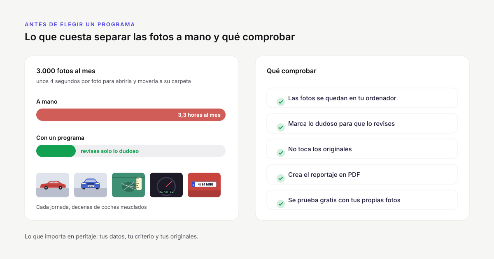
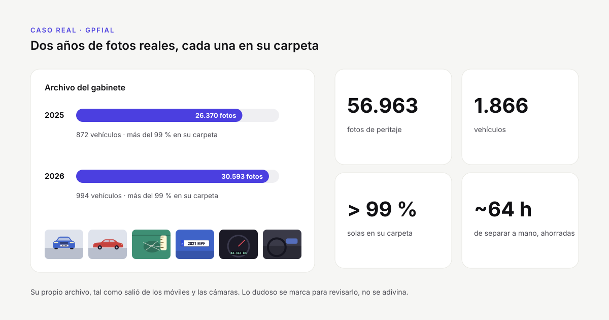

Programa para las fotos del peritaje: qué mirar antes de elegirlo
Si cada día vuelves con decenas de vehículos fotografiados, tarde o temprano te planteas si seguir separando las fotos a mano o dejar que lo haga un programa. La respuesta depende de dos cosas: cuánto tiempo te cuesta hoy y si el programa encaja con tu forma de trabajar sin crear problemas nuevos. Esta guía te ayuda a hacer esa cuenta y repasa lo que conviene comprobar antes de decidir.

Cuánto tiempo se va hoy en las fotos
Lo primero es poner números a lo que haces a mano. Mirar cada foto, reconocer el vehículo y moverla a su carpeta lleva unos 4 segundos. Parece poco, pero se acumula:
| Fotos al día | Días al mes | Tiempo al mes separando fotos |
|---|---|---|
| 50 | 20 | 1 h 7 min |
| 150 | 20 | 3 h 20 min |
| 300 | 20 | 6 h 40 min |
Y eso es solo separar. Después vienen renombrar los archivos, montar el reportaje fotográfico del expediente (pegar las fotos, girarlas, escribir los pies) y, a menudo, reducir su peso para subirlas a la plataforma de la aseguradora.
Para saber lo que vale ese tiempo en tu caso, pon tus fotos al día, tus días de trabajo y lo que vale tu hora en la calculadora de tiempo.
Cuándo basta con hacerlo a mano
No siempre compensa un programa. Si haces pocos vehículos a la semana, el método manual bien hecho (ordenar por fecha de captura, una carpeta por matrícula, trabajar sobre una copia) es suficiente. Lo explicamos paso a paso en la guía sobre cómo organizar las fotos de un peritaje por vehículo.
Empieza a merecer la pena cuando se dan una o varias de estas situaciones:
- Muchos vehículos por jornada: rondas de talleres, campas, inspecciones de flota.
- Fotos de varios peritos que alguien tiene que ordenar y archivar.
- Errores que ya te han costado algo: una foto de otro vehículo en un expediente, un reportaje incompleto, un informe que hubo que repetir.
- El reportaje en PDF se monta a mano para cada vehículo.
Qué mirar antes de elegir un programa
1. Dónde se procesan las fotos
Las fotos de un peritaje contienen matrículas y, a veces, caras, documentación del vehículo o la ubicación GPS de donde se hicieron. La matrícula permite identificar al titular, por eso se trata como un dato personal. Si un programa sube las fotos a un servidor externo para leerlas, ese tratamiento pasa a depender de un tercero y conviene revisarlo con tu responsable de protección de datos.
Un programa que lee las matrículas en tu propio ordenador, sin enviar las fotos a ninguna parte, simplifica mucho esa parte. Pregúntalo siempre: ¿las fotos salen del equipo en algún momento?
2. Qué hace con lo que no tiene claro
Ningún sistema de lectura acierta siempre: matrículas sucias, de noche, a contraluz o tapadas, y fotos sin matrícula (interiores, daños de cerca). Lo importante es qué hace el programa en esos casos:
- ¿Te avisa de las lecturas dudosas o las coloca sin decir nada?
- ¿Une las fotos sin matrícula con el vehículo al que pertenecen, por ejemplo por el orden en que se hicieron?
- ¿Puedes corregir un vehículo o unir dos grupos antes de que se copie nada?
En un peritaje la última palabra tiene que ser tuya. Un programa que decide en silencio te obliga a revisarlo todo después, y entonces el ahorro desaparece.
3. Que no toque los originales
Las fotos originales, con su fecha y hora de captura, son la prueba de cuándo se hizo cada una si el informe se discute. El programa debería trabajar sobre copias por defecto y dejar los archivos originales tal como salieron de la cámara o del móvil.
4. Que acepte las fotos como llegan
Comprueba que lee los formatos que usáis: JPG, PNG y también HEIC, el formato de las fotos del iPhone, que muchas aplicaciones y plataformas no abren. Si en tu equipo hay iPhone, lee también qué hacer con las fotos HEIC. Y que admita la carpeta tal como la vuelcas del móvil o de la tarjeta, con subcarpetas incluidas.
5. Cómo deja las carpetas y los nombres
El resultado tiene que servir para el expediente sin retocarlo: una carpeta por vehículo con la matrícula en el nombre y las fotos renombradas y numeradas en orden. Así, meses después, encontrar un vehículo es buscar su matrícula.
6. El reportaje fotográfico en PDF
Si tu informe lleva reportaje fotográfico, mira cómo lo hace el programa:
- Tus plantillas: el logotipo del gabinete, la portada con los datos del siniestro y cuántas fotos por página.
- Vista previa editable: girar una foto, quitar las que sobran y cambiar los textos antes de crear el PDF.
- El pie de cada foto: una descripción («Daño en la puerta delantera») y, si te interesa, la fecha y hora en que se hizo.
Es la parte que más tiempo quita después de separar las fotos, y la que más se nota cuando está bien resuelta.
7. El peso de las fotos
Las plataformas de las aseguradoras suelen limitar el tamaño de lo que se sube. Si el programa comprime las fotos sin tocar los originales, te ahorras otra herramienta. Si solo necesitas eso, en la guía para reducir el peso de las fotos para la aseguradora tienes cómo hacerlo.
8. Si trabajáis varios peritos
En un gabinete conviene saber cuántos ordenadores entran en cada plan, si se puede pasar una licencia de un equipo a otro y si se puede ver el trabajo del equipo sin mover las fotos de sitio.
Pruébalo con una jornada real
Las capturas de pantalla y las demostraciones enseñan casos fáciles. La única prueba que vale es la tuya: coge una jornada completa, con sus fotos difíciles, y pásala por el programa. Fíjate en tres cosas:
- Cuántos vehículos ha separado bien y cuántos te ha pedido revisar.
- Cuánto has tardado en total, contando la revisión, frente a lo que tardas a mano.
- Si el resultado está listo para el expediente o aún tienes que retocarlo.
Busca un programa con prueba gratuita y sin compromiso, para hacer esta comprobación con tus propias fotos antes de pagar nada.
PeritoLab Matrículas, punto por punto
PeritoLab Matrículas se hizo para este trabajo. Lee la matrícula de cada foto en tu ordenador, sin conexión y sin enviar las fotos a ningún sitio, y separa la jornada en una carpeta por matrícula con las fotos renombradas («2821MPF (1)», «(2)»…). Lo que no es concluyente lo marca para que lo revises, y corregir un vehículo es teclear su matrícula. Trabaja sobre copias, acepta JPG, HEIC y PNG con sus subcarpetas, y de cada vehículo crea el reportaje fotográfico en PDF con tus plantillas. Tiene planes para uno o varios ordenadores (consulta los precios y planes) y 30 días de prueba con todas las funciones, sin tarjeta: tiempo de sobra para probarlo con tus propias jornadas.
Sigue leyendo

Caso real: cómo GPFIAL organiza miles de fotos de peritaje al añoCómo un gabinete pericial de Canarias organiza miles de fotos al año: 56.963 fotos reales de 1.866 vehículos, más del 99 % en su carpeta. Qué fotos hacer en un peritaje de automóvil: la lista completaLista de las fotos de un peritaje de automóvil: identificación, generales y de detalle, cómo fotografiar los daños para que se vean y qué conservar.
Qué fotos hacer en un peritaje de automóvil: la lista completaLista de las fotos de un peritaje de automóvil: identificación, generales y de detalle, cómo fotografiar los daños para que se vean y qué conservar. Cómo organizar las fotos de un peritaje por vehículoCómo separar las fotos de un peritaje en una carpeta por vehículo: método manual, consejos para no equivocarse y cómo hacerlo automático con la matrícula.
Cómo organizar las fotos de un peritaje por vehículoCómo separar las fotos de un peritaje en una carpeta por vehículo: método manual, consejos para no equivocarse y cómo hacerlo automático con la matrícula.